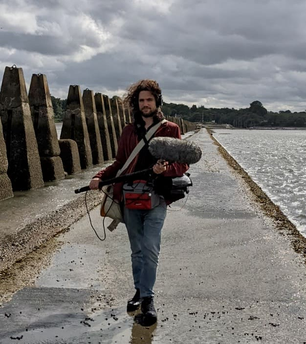

Sound designer / Composer / Audio post
Nico RivoSound for the picture, and for what comes after.
I design sound for film and indie projects, edit and restore dialogue, and compose. Based in London, MSc Sound Design from Edinburgh.
Selected work
3 projects-
Orchestral Medley of three Angelo Badalamenti's compositions for the tv show Twin Peaks
-
A documentary about a Ukrainian film student's experience of war and longing for home.
-
Details to follow.
Soundtrack
7 worksSound for film and documentary.
-
A short educational film about the renowned Italian artist and writer Carlo Levi, featuring a never-before-seen painting from the director's private collection.
-
Suspenseful short exploring fate and choice. Tension built through environmental sounds and crafted silence.
-
Gothic-inspired short. Audio evolves from grounded reality to ethereal otherworldliness.
-
Atmospheric short set in Mustang Valley, Nepal. The wind becomes a character through blended organic and processed sound.
-
Details to follow.
Sound design
4 worksDesigned and recorded sound.
-
An unsettling awareness of your own heartbeat rendered through carefully crafted soundscapes.
-
Sonic narrative from John Koenig's Dictionary of Obscure Sorrows. Field recordings give voice to unnamed emotions.
-
Graphic score creation from film soundtrack and rescoring
-
The ache of a life unlived rendered through layered field recordings.
Software
5 worksAudio tools and generative systems I have built.
-
Evolving drone synthesis engine. Layered harmonics and subtle modulation produce detailed ambient environments.
-
Algorithmic composition tool. Melodic patterns inspired by hummingbird flight translated from movement data.
-
Generative audio environment inspired by wetland ecosystems.
-
Voice-driven generative system. Spoken input transformed into evolving harmonic and rhythmic structures.
-
Generative system transforming biological data into evolving soundscapes through custom algorithms.
Composition
9 worksOriginal music and arrangements.
-
Delicate composition inspired by the water nymph. Shimmering textures create an immersive underwater atmosphere.
-
Score expansion for string quartet and harp of Debussy's piano composition
-
Cinematic composition exploring tension and release. Rhythmic intensity meets orchestral breadth.
-
Advertising composition with a sophisticated harmonic palette and polished production aesthetic.
-
Minimalist composition exploring breath and space. Sparse harmonic textures evolve slowly over time.
-
Tense composition using textural elements and rhythmic intensity — a psychological portrait.
-
Playful reinterpretation of cartoon aesthetics. Detailed foley meets contemporary musical techniques.
-
Dreamy impressionistic composition drawing from surrealist imagery and film score traditions.
Audio restoration
Before / afterI take hiss, hum, clicks and room noise out of dialogue and archive recordings, and keep the voice intact. Listen to the difference, and look at it.
Dialogue, as received and after my work. Both versions are set to the same speech level, so what you hear is the noise, not the volume.
Press play. Nothing sounds until you do.
Services
Ask for a quoteDialogue editing & audio restoration
I clean, edit and balance dialogue so every line sits properly in the mix, and I restore noisy or damaged recordings.
Ask about thisPodcast editing
I edit, clean and level episodes so they are ready to publish.
Ask about thisSound design for film & indie projects
I build the sound of a short, a documentary or an indie game: recordings, foley, design and mix.
Ask about thisComposition & music
I write and produce original music, from sparse textures to full orchestral scores.
Ask about this
About
London
I am Nico Rivo (Nicola Rivosecchi), a sound designer, composer and audio post engineer based in London. I have an MSc in Sound Design from the University of Edinburgh.
I work on short films, documentaries, music projects and generative audio systems. The same ear runs through all of it: listening first, then deciding what the picture needs to hear.
I also write code. node•L•soup is where that side lives: creative coding and digital art. Visit node•L•soup →
Contact
Reply within a few daysThe quickest way is a short message with what you are making and when it needs to be finished.